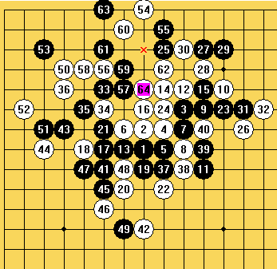
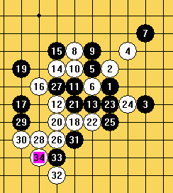
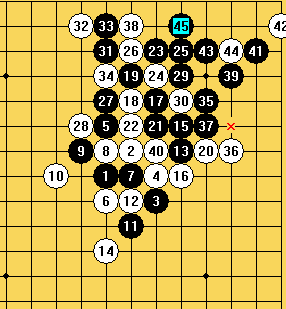
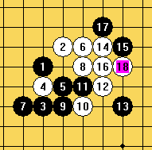
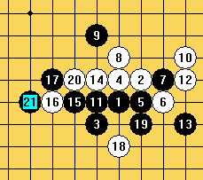

浙江的比赛经历
#1 浙江的比赛经历 作者：南通小小包 发表时间：2007-8-29 15:28:38
有短信来了,"徒弟啊,你来浙江吧,师傅想你了."师傅我下午给你答复吧,最近有点忙,而且我好久没有下棋了."最后还是决定去吧,师傅3年每年都叫我去浙江,北京,我都没有去.以前总觉得等自己强一点再去吧,可是也许是天分吧.我知道我不会成为那种真正的高手.就作为一个真正的爱好者去感受下大赛的气氛吧!! 8.20 (晚上还出了意外,女朋友开了朋友的车无证驾驶.我23号要走22号前要解决这个事,无证驾驶挺麻烦啊.)
22号事情都解决了可是这最后的2天也不曾有机会看看棋谱准备准备.23号7点我就上了汽车,因为爸妈24号去北京玩,相机就给他们用了.想借一个的,还是想想算了.一个人坐了整整5小时的车到了杭州,感觉有点路途劳顿.不过也有一点兴奋.
"师傅我到了酒店了""那你来305啊"我就这样到了305.看到师傅 呵呵 和网上的照片区别不是很大不过感觉要虚弱的多.许永伟老师帮我安排了房间等事宜,康岩(丸子)和我一个房间.和认识的一个房间很不错.吃饭.买了一些零食和一箱矿泉水.听说这次还有个南京的MM 期待中.
不错是个PLMM(省略1万字的赞美词).还会扎针.........哈哈丸子象个刺猬.第一天在轻松愉快的心情中结束.睡觉大概也就1 2 3 4点左右睡着吧.8.23
7点起床做口部脸部清洁工作,2楼吃饭.等开会...出了点小意外 会场空调坏了...开会不喜欢(自动省略1万字).
第一轮,我开局.赛前也没有准备,我的对手是一个叫李磊对手,我考虑了几分钟走了疏星,没有交换我打了1打和2打对手留了2打我考虑了几分钟.想的是走什么变化最后选择了黑进攻型的风尘流.(我对这个变化还是有一点点研究的.白走错的话我有信心可以杀出来.)很不幸白会这个变化.决策失误.26后我就想着控制局面,压缩白棋的空间.为后期的全面防守做好准备.不过我实战的走法个人感觉还是比较的强悍的不过我自己也知道那是无奈的强悍.黑攻击到第49手就脱先了,不过下方的空间我也把他挤压的差不多了,其实这个时候我就向和棋发展了.50果然上方做棋不过因为空间的关系我感觉我可以防守的住的.不过后面也出现了一个影响子力的错误最后被抓了长连的禁手.不过这盘主要还是战术的错误.心理也没有什么特别的影响白42切断了我下方的所有连接,效率极高.走出赛场丸子,王珏第一轮都输了.第一轮输了对我没有什么影响.我只想赢一盘不垫底就可以了.

第2轮,对手开局.郁闷 对手开了新月......55555#$@%$@%#%我不会..可是也只有选择交换了,打点都选择错误了...白明显会这个攻击手段.没有机会输的也无话可说.输了2轮喽.我还真的好弱啊.

第3轮呵呵对丸子,赢了.总算拿了一分了.一天的比赛终于结束了,还不错有了一分.嘿嘿虽然是砍兄弟的一分 哈哈!!!除了丸子第一天我和王珏都有分了.晚上就出了第2天的对局表我对浙江的一个MM.晚上我师傅帮我准备了2个骗招,到时用什么自己决定.狂汗....原来这就是比赛,不在是网络战,给你必胜,你会杀吗?? 8.24

第2天我选了一个比较一般的骗黑7就错了,我走完白8就出去抽烟了.我回来时黑还没有落子我想她也看到了必败了.我们草草的下了几手黑投了.2分了.休息吃饭.下午我对漂亮MM.MM这段时间状态好象不是很好啊.

赛前我也准备了一个变化,不过用不上,她没有走她熟悉的松月.斜月她考虑了大概10分钟走了这个.到白8必然.这时白活3黑有两边的防,我知道一边是必败,一边平衡,我没有犹豫走了必败的点.出去抽烟,赛场太压抑,与紧张了.12白出了一个小错误,不过还不影响胜负.14败招,我知道我赢了3分了..回去后MM一个人在房间哭了好久好久....

下一轮我对上海2段樊星岑...我比赛最最郁闷一段开始了.我开了松月.出呼意外没有交换.走到16的时候我感觉我要赢了,可能也是3轮都赢的比较轻松,心理上不在那么平静了,不平静就会出现简单的失误.到24的时候我算清了上面所有的变化,就没有犹豫的走了哪个变化......下面漏看了一个简单的白43..........其实只要攻击开始我先占下白43点我在下面就有43的VCF白必须防,我在去上面攻击就胜了.当白走了这个43时.我突然感觉我眼睛里有了水分,我早早的回到房间,站在窗前希望平静自己的心情,不过我知道我想进入前10已经有点困难了.是啊没有输给别人输给了
#2 Re:浙江的比赛经历 作者：小丸.net 发表时间：2007-8-29 16:10:21
小包专砍自已人。。。。。。